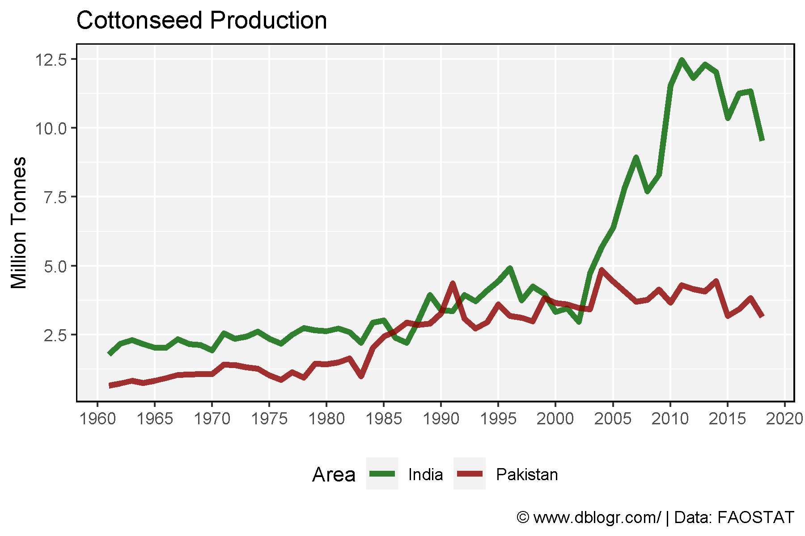
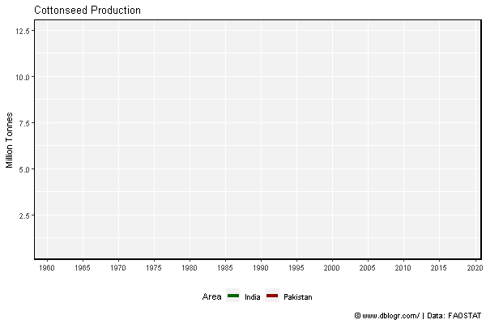

# devtools::install_github("derekmichaelwright/agData")
library(agData) # Loads: tidyverse, ggpubr, ggbeeswarm, ggrepel
library(gganimate)
India vs Pakistan
# Prep Data
xx <- agData_FAO_Crops %>%
filter(Crop == "Cottonseed", Area %in% c("India", "Pakistan") )
# Plot Data
mp <- ggplot(xx, aes(x = Year, y = Value / 1000000, color = Area)) +
geom_line(size = 1.5) +
scale_color_manual(values = c("darkgreen", "darkred")) +
scale_x_continuous(breaks = seq(1960, 2020, 5), minor_breaks = NULL) +
theme_agData(legend.position = "bottom") +
labs(title = "Cottonseed Production", y = "Million Tonnes", x = NULL,
caption = "\xa9 www.dblogr.com/ | Data: FAOSTAT")
ggsave("gallery/cotton_01.png", mp, width = 6, height = 4)

mp <- mp +
# gganimate
transition_reveal(Year) +
ease_aes('linear')
anim_save("gallery/cotton_gifs_01.gif", mp, width = 600, height = 400)

Burkina Faso
# Prep data
x1 <- data.frame(Area = "Burkina Faso", Measurement = "Production",
Year = c(2014,2015,2016,2017, 2018),
Value = c(707000,581000,682940,613000,436000))
xx <- agData_FAO_Crops %>%
filter(Crop == "Cottonseed", Measurement == "Production",
Area == "Burkina Faso") %>% bind_rows(x1)
# Plot
mp <- ggplot(xx, aes(x = Year, y = Value / 1000000)) +
geom_line() +
scale_x_continuous(breaks = seq(1960, 2020, 5), minor_breaks = NULL) +
theme_agData() +
labs(title = "Cotton production in Burkina Faso", y = "Million Tonnes", x = NULL,
caption = "\xa9 www.dblogr.com/ | Data: FAOSTAT")
ggsave("gallery/cotton_02.png", mp, width = 6, height = 4)

© Derek Michael Wright 2020 www.dblogr.com/